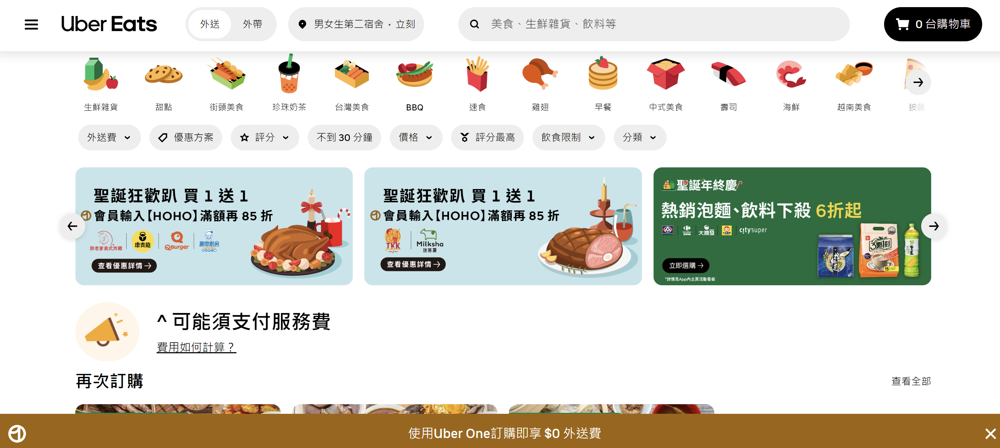
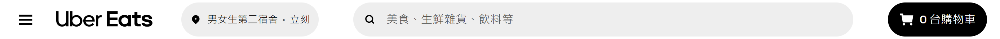
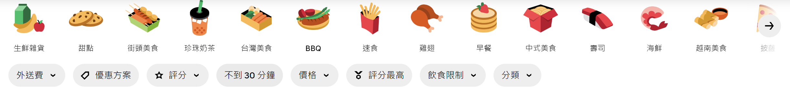
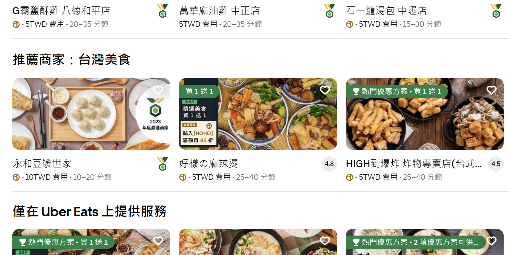
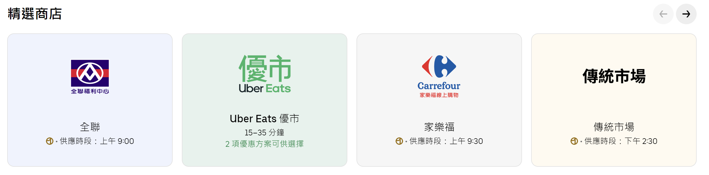

推薦網站
我推薦的網站是Uber Eats。
Uber Eats是美國交通網路公司Uber所推出的一個餐飲外送服務，Uber Eats與全世界各地城市的餐廳合作，讓使用者可以透過手機APP在線上訂餐並享受外送服務。
以下是Uber Eats電腦網頁的畫面。

Uber Eats的UI設計特別簡約易懂，且還有「您的愛店」這個我的最愛功能，可以把喜歡的店家加入，
也就是說正在猶豫不知道要點哪一間的時候，可以先把自己有點喜歡的店家加入清單內，之後再來做最好的決定。
不需要像其他平台那樣要一直翻翻找找，是很親民的一個功能。
付款設定等也可以在「帳戶」功能馬上進行編輯，可以說是完全不太需要操作教學的一個外送APP。  
Uber Eats 平台上超過上萬家商家、數十種異國美食種類，當客人瀏覽琳瑯滿目的品項選擇時，
自然會先從星級評價作首要的挑選依據，因此若要獲得五星等的超高評價，
不僅要推出讓客人讚不絕口的美味佳餚，在平台上的服務品質更是要好好維持！ 
Uber Eats擁有強大資本支撐，近年來更是與超商、超市、藥妝店等實體門市合作，
讓消費者除了在餐點上能夠滿足需求以外，生鮮食材、日常用品或化妝品等也能夠透過外送平台進行採購，是現代人的好幫手。 